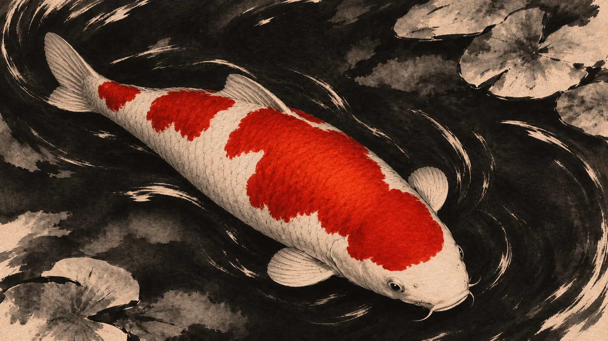
THE STORY OF MS. YINGYING CHUNG · TAIWAN
KOI
QUEEN
An eye for living art.
A life shaped by difficult choices.
SCROLL TO READ
KOIQUEEN / 2026
01 / S-LEGEND
The hand
went up.
¥203 million.
At Sakai Fish Farm’s 2018 auction, Ms. Chung placed the winning bid for the Kohaku S-Legend as the Taiwan dealer for a client. The price made headlines; the judgment behind it had taken years.
READ THE UK JUDGES’ ACCOUNTBEFORE THE BID / YUNLIN
It began
at the water.
Ms. Chung grew up beside the ponds of her family’s farm. Her grandfather’s example stayed with her. She studied art in Taiwan and Beijing; years later, the family business called her home.

BEFORE THE JOURNEY
A life
measured in
what we do.
Affection for her grandfather helped draw Yingying back to the farm. As a child, she asked him how to use the hours of a life. His work on that land became an example she carried forward. Hear her TEDxTaipei talk.
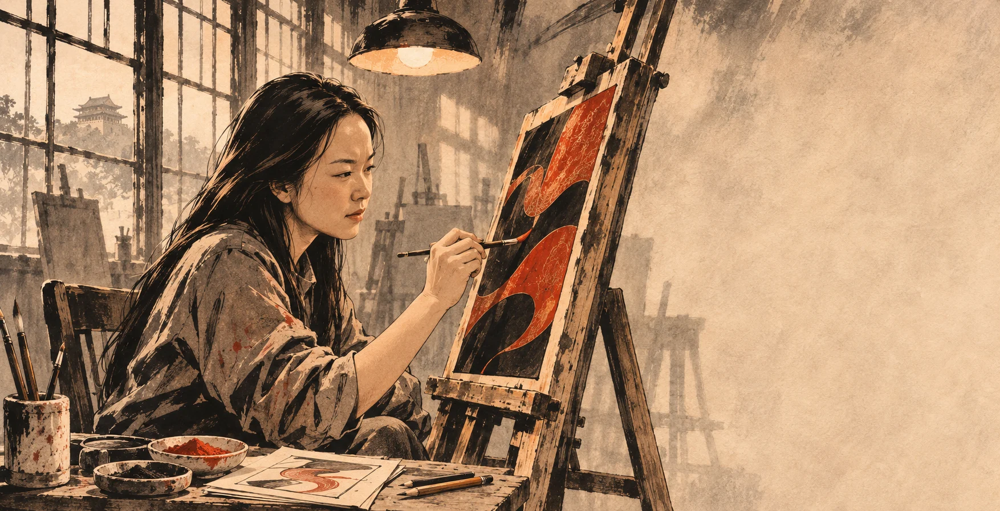
02 / BEFORE THE FARM
The art room
came first.
One biographical account names the art program at Fengyuan High School in Taiwan. Art came before the fish farm.
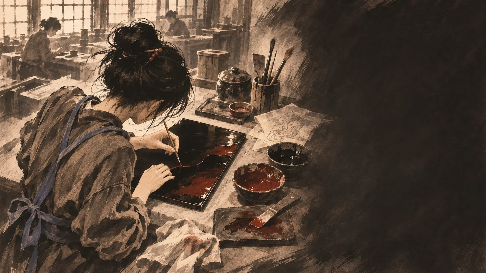
BEIJING / LACQUER ART
The lacquer years
in Beijing.
Yingying studied at the Central Academy of Arts and Crafts, now Tsinghua University’s Academy of Arts & Design. She chose 大漆工藝, traditional lacquer art. Photographs from those years show her working on a lacquer panel.
READ THE ACADEMY’S HISTORY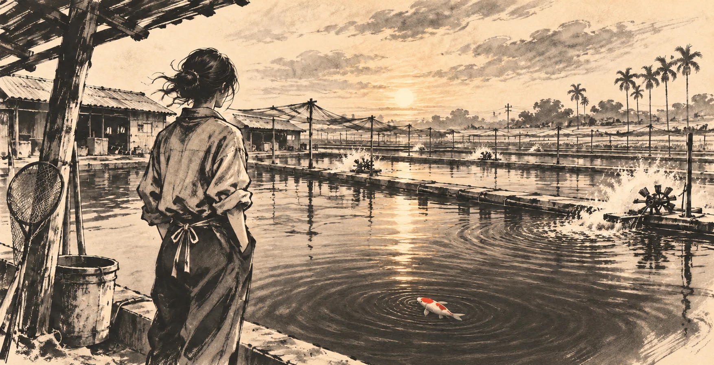
03 / THE RETURN
Back to
the ponds.
She returned to Sing Chang as CEO. What she had learned about colour and composition became part of how she saw, selected, and presented koi.
03 → THE WEIGHT
Coming home did not make the work easier.

THE WEIGHT / THE CHOICE
Debt on
the desk.
Fish in the water.
In her 2014 TEDxTaipei talk, Ms. Chung described returning to a family business under heavy debt. In the first years she financed the overseas exhibitions herself, counted every penny, and sought people willing to help. Scarcity forced fresh ways of thinking.
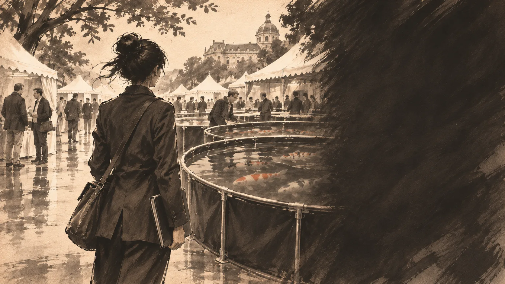
THE DECISION
If the world did not know Taiwanese koi, she would bring the fish to the world.
At the 2003 Holland Koi Show, she saw how little of the European market knew Taiwan’s fish. The path forward ran through show halls, introductions, and trust built face to face.
READ THE MINISTRY OF AGRICULTURE ACCOUNT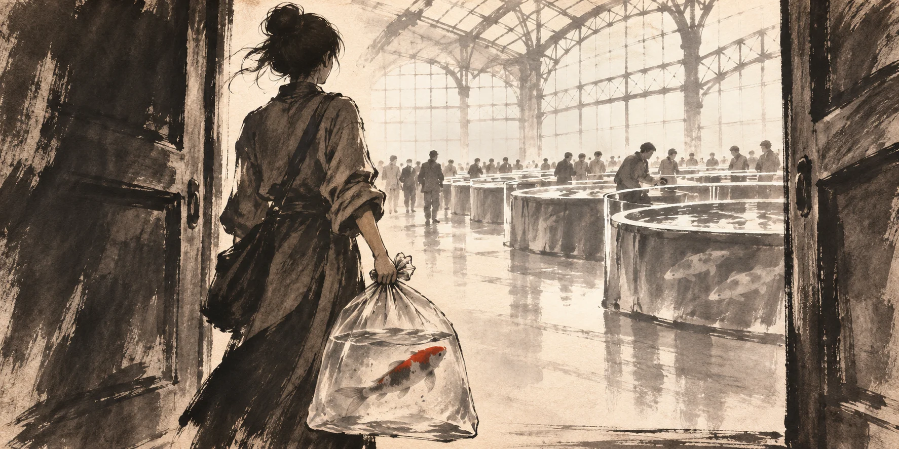
04 / THE CROSSING
One fish.
One hall.
A wider world.
From 2003 until the pandemic, she exhibited at European koi shows year after year. Holland, Germany and the UK became fixtures. Shows in the United States and South Africa followed. She began under the Sing Chang Koi Farm name and built direct relationships with overseas buyers. See the 2010 article.

AN EARLY UK SHOW
A tent.
A cold night.
Another morning.
For one UK exhibition, Ms. Chung slept in a tent to save hotel costs. Her account recalls temperatures around −4°C. The outdoor show grounds could be beautiful; getting there still demanded a great deal.
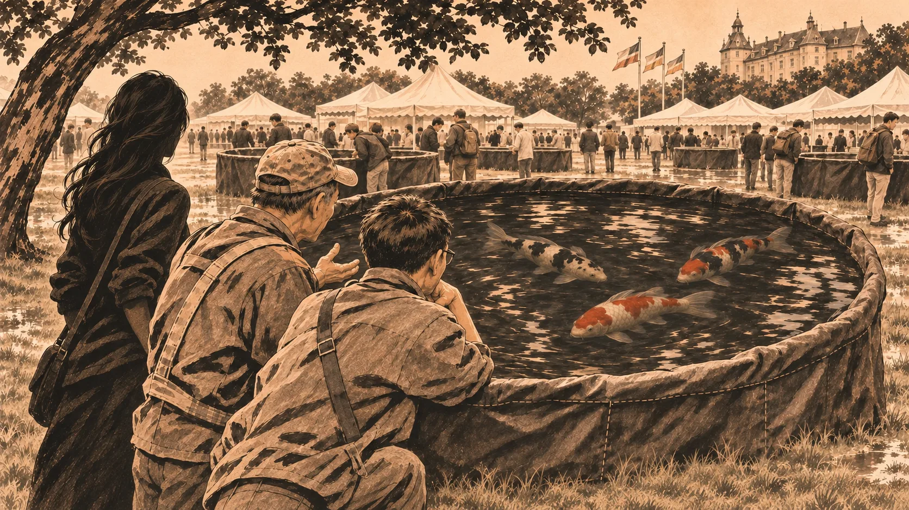
THE CIRCLE GROWS
The journey became
larger than one farm.
The exhibitions widened from a farm stand to an industry portal, a trade association she founded and a koi promotion association she helped establish. In 2009, Taiwanese breeders presented together at the Holland Koi Show. Seeing the market firsthand let them hear buyers, form their own opinions, and look beyond familiar ways of working.
READ THE MINISTRY’S SHOW REPORT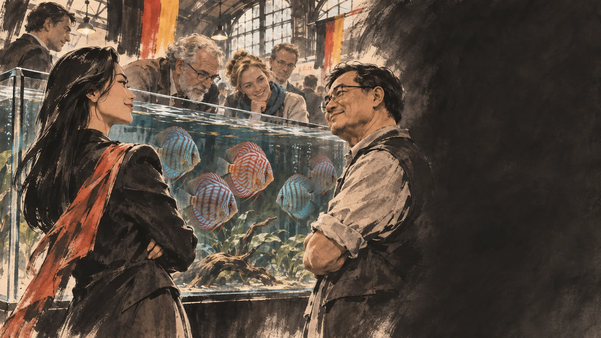
BEYOND KOI
Another breeder.
Another fish.
A door opens.
She also worked across the ornamental fish trade, bringing discus breeder Yi Sui-yang to exhibit in Europe. His fish went on to win Grand Champion honours at a German discus show; they also exhibited at a major pet trade fair in Germany. The method was familiar: make an introduction, find a way through, and let the breeder meet the market.
READ ABOUT YI'S GERMAN WINS05 / PASS IT ON
The next journey
began in the mud.
Ms. Chung also opened the farm to young people. Her Koi Academy started with the work that keeps a fish farm running: clearing weeds, tending ponds, learning to catch and pack koi. It was a test of commitment and a way to learn the life behind the fish.
READ THE ARCHIVED KOI ACADEMY REPORT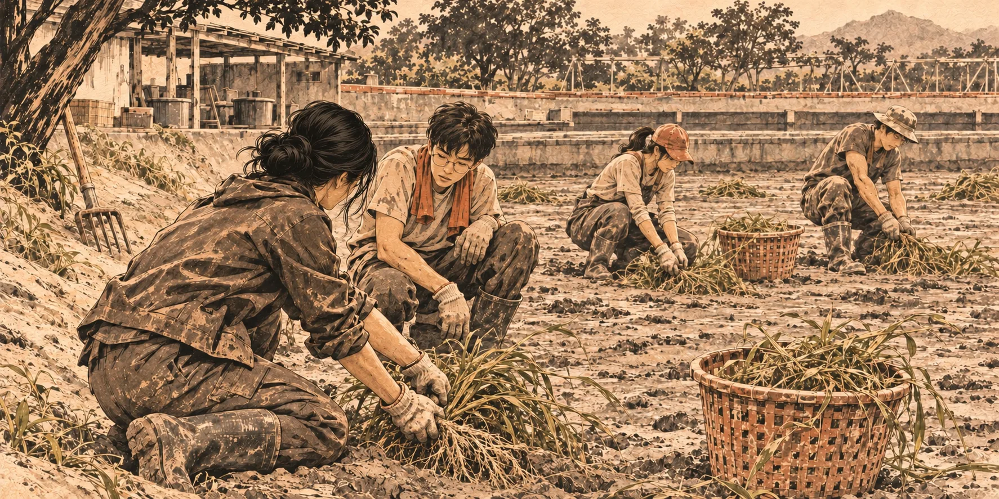
First, the hands learn the work.
Then the world opens.
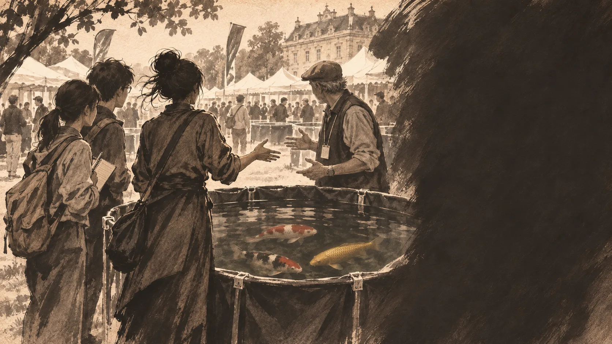
Students who did well at the farm could travel with her to Holland. There, fish keeping met international trade: they encountered dealers and customers in person, saw how people responded to different koi, and could make up their own minds about the work’s possibilities.
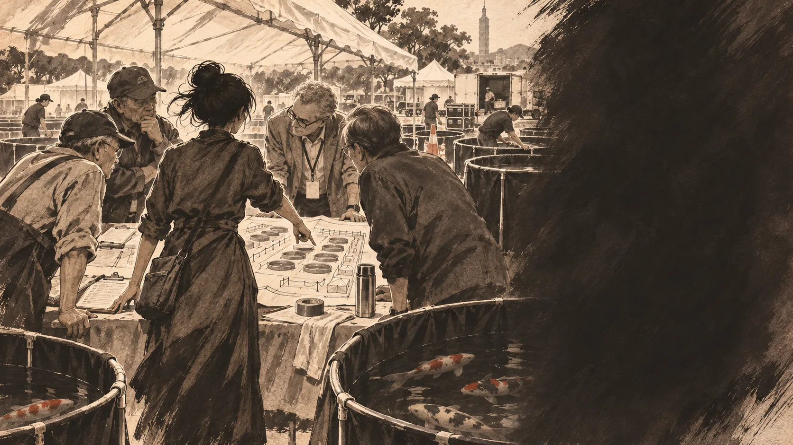
BUILD THE SHOW
A show needs
more than fish.
Exporting fish was only part of the work. In Taiwan, Ms. Chung also helped organize koi shows: bringing breeders, officials, volunteers and invited international judges together, and finding agreement in a trade often led by men older than her. At the 2013 Asia Cup young koi show, she served as organizing chair.
WATCH THE 2013 SHOW REPORT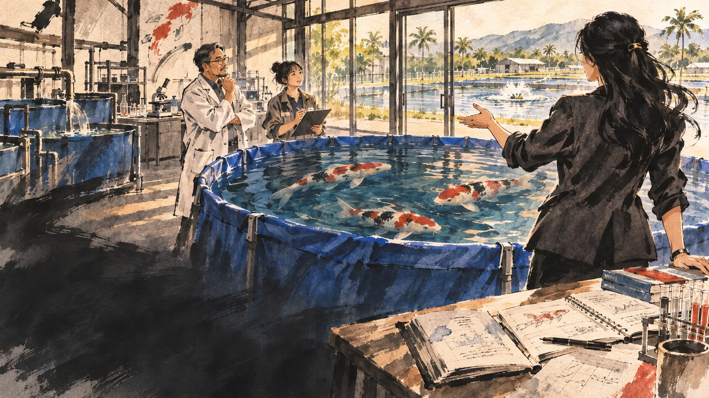
06 / PINGTUNG · 2014
A place for
the whole trade.
After building an industry portal and helping bring breeders together through associations, Yingying founded her own company in Pingtung and established the International Koi Institute, or IKI. The institute joined international trade with research and education, with the aim of developing Taiwan’s koi industry and its links abroad. IKI opened in 2014, four years before the S-Legend auction. Today she judges and buys koi under the IKI name.
READ THE 2014 OPENING REPORT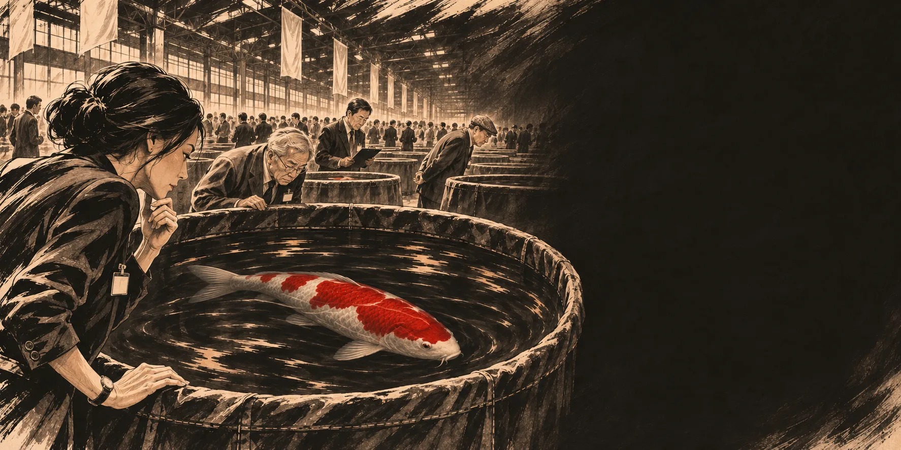
THE EYE GOES FURTHER
The breeder
became
a judge.
In recent years, Ms. Chung has judged at the All Japan Nishikigoi Show in Tokyo and at koi shows in France, the Netherlands, Belgium, China, and Southeast Asia. The Tokyo show is the world’s largest. She brings experience as a breeder and show organizer to the judging vat.
READ ABOUT HER JUDGING IN JAPAN EXPLORE THE ALL JAPAN SHOW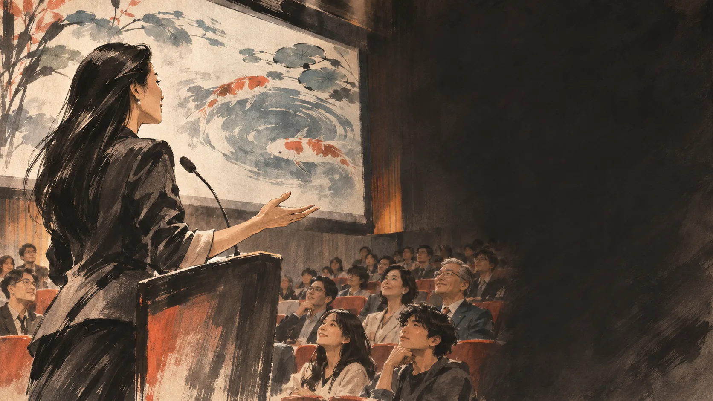
PASSING ON THE VIEW
The first shows
came out of her own pocket.
Today Yingying speaks at companies, associations and universities in Taiwan. She tells students and business leaders about the years when money was short and every overseas show cost more than she could spare. She explains how she built direct relationships with buyers, questioned the old sales chain, and kept those relationships for years. She asks audiences to examine the habits behind their own dead ends.
READ ABOUT ONE OF HER TALKS
FROM THE RECORD
The ink gives way
to the archive.
The ink scenes express the stakes. The photographs show Ms. Chung at work.
SOURCE: MIRROR MEDIA
THE EYE
Look closer.
Look ahead.
Ms. Chung’s work asks collectors to see beyond the first impression: the body a fish has now, and what it may become with time and care.
END OF THIS CHAPTER
The story is still
in the water.
Explore the photographs, reporting, and source links behind this story in the chapter galleries and on the main Koiqueen site.
Original generated illustrations are symbolic scenes, not documentary images or likenesses.